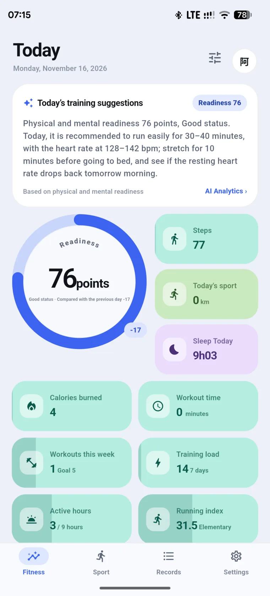

Your watch data,
on your own machine.
Vitaloop is a free Android app for tracking health and workouts. It reads Huawei wearables directly over Bluetooth, keeps everything in a local SQLite database, and syncs to a server only if you run one yourself.

What it does
Local first. No account required, no telemetry.
Readiness & daily dashboard
A readiness score built from HRV, sleep, resting heart rate, skin temperature, stress, and recovery. Missing metrics are dropped and the remaining weights are normalized.
Huawei watch sync
Classic Bluetooth RFCOMM with HiChain authentication, following the pairing flow documented by Gadgetbridge. Sleep, heart rate, stress, HRV, SpO2, and workouts come in incrementally.
Workout analysis
Maps, heart-rate curves, splits, elevation, running dynamics, training load, plans, and GPX/TCX export, plus long-image sharing of a full workout.
Terrain maps
Protomaps PMTiles basemap with a green elevation tint, DEM hillshade, and server-computed contour lines. Tilt to 45° for a 3D-like view; each layer toggles from a long press.
Migration & export
One-time import of a legacy database, workout tracks, profile, goals, and Huawei pairing material. Export to GPX/TCX at any time.
Optional self-hosted sync
Account-based cloud backup and live track sharing against a server you deploy. Nothing is sent anywhere until you enter an address and sign in.
Screenshots
Captured from the Android build with illustrative device data. Click a shot for the full-length screen.


Install
Android 7.0 or newer, arm64.
- Download the signed APK and open it on the phone.
- Allow installs from the browser or file manager you used.
- Grant location, background location, nearby devices, and notification permissions so tracks and watch sync keep running.
- Pair the watch from Settings → Huawei watch; see the pairing guide for the Huawei auth-key flow.
The demo APK points at the author's server for update checks and map tiles only. Do not use that instance for real health data — deploy your own server.
Source code
Not public yet.
The app and the server are both written in Rust plus Flutter, but the repositories are private for now. This page will link to them once they open; until then, use the preview APK above.
Huawei watch pairing
Classic Bluetooth RFCOMM with HiChain authentication. Keep the watch nearby and charged.
First-time pairing
- Pair the watch to the phone in the system Bluetooth settings.
- Open Vitaloop → Watch, select the watch, and tap Connect.
- Enter the Huawei account currently bound to the watch.
- Allow the request on the watch. Sync then starts automatically.
Migrate without a reset
If the watch is already bound to Huawei Health and you do not want
to reset it, install the legacy awen-sync app once to
migrate its HiChain credentials. Then select the watch in Vitaloop and
connect it.
Keep the pairing stable
Do not unbind the watch in Huawei Health: that invalidates the authentication key. Close or uninstall Huawei Health while syncing so the two apps do not fight for the Bluetooth connection.
- Authentication key negotiation failed — the watch already has credentials that Vitaloop does not. Migrate them, or reset and pair for the first time.
- Connected but no data — check the Huawei account on the Watch page, reconnect, and inspect the connection log.
- No watch confirmation — move the watch closer and retry; the connection log shows the failed step.
Self-host the server
One static Rust binary, no third-party runtime crates.
- Accounts — email + password, salted SHA-256 with 60k rounds, 30-day bearer sessions.
- Sync — full health snapshots plus an append-only delta log, merged on read.
- Workouts — cached per account with list and detail endpoints.
- Maps — PMTiles style/tile proxy, DEM tiles, and contour tiles computed from public elevation data.
Deploy
Docker Compose builds a musl binary and runs it on a scratch image.
The server is not published yet. When it is, it will be a single
static Rust binary listening on 127.0.0.1:8793, with one
data volume. Put HTTPS in front and point the app at your own domain
from Settings → Account → Server.
MCP endpoint
Streamable HTTP + JSON-RPC 2.0 at /mcp. One POST returns one JSON-RPC response; no SSE.
Connect an MCP client
{
"url": "https://your-vitaloop-domain/mcp",
"headers": {
"Authorization": "Bearer <session-token>"
}
}
The Bearer session grants read access to all health data for that
account. Use HTTPS, store the token locally in the MCP client, and
never publish it. Protocol versions 2024-11-05,
2025-03-26, and 2025-06-18 are supported.
Methods and errors
initialize,notifications/initialized,ping,tools/list, andtools/call.- Results return
structuredContentand equivalent compact JSON incontent[0].text. - Error codes: parse
-32700, invalid request-32600, unknown method-32601, invalid params-32602, auth-32001.
| Tool | Returns | Arguments |
|---|---|---|
health_summary | Aggregated recent overview | days 1–3650, default 7 |
blood_pressure | Blood-pressure records | from_ms, to_ms, limit |
blood_glucose | Glucose records | |
weight | Weight and body composition | |
temperature | Skin/core temperature points | |
hrv | HRV records | |
stress | Daily stress | |
spo2 | Daily SpO2 | from_ms, to_ms, limit |
heart_rate | Heart-rate samples | Same; defaults to the last 24 hours |
metric_points | Generic metric series | Same plus metric |
sleep | Sessions, bed data, and stages | from_ms, to_ms, limit |
daily_metrics | Daily summaries | |
workouts | Workout records | |
query_table | Any whitelisted read-only table | table plus the time window and limit |
Timestamps are Unix milliseconds. Daily summaries use date_day (epoch days).
limit defaults to 200 and caps at 2000; rows are newest-first. Values are returned
in source units and column names. query_table only accepts health-table names.
Privacy model
The preview build ships without a default cloud server, ephemeris server, API key, or signing key.
Local-only by default
Health data is written to SQLite on the device. No account is needed to record, analyze, migrate, or export.
Cloud is opt-in
Sync stays off until you enter a server address and sign in. The server stores a salted password hash, never the password.
No trackers
No advertising SDK, no product telemetry, and no third-party analytics in the default build.